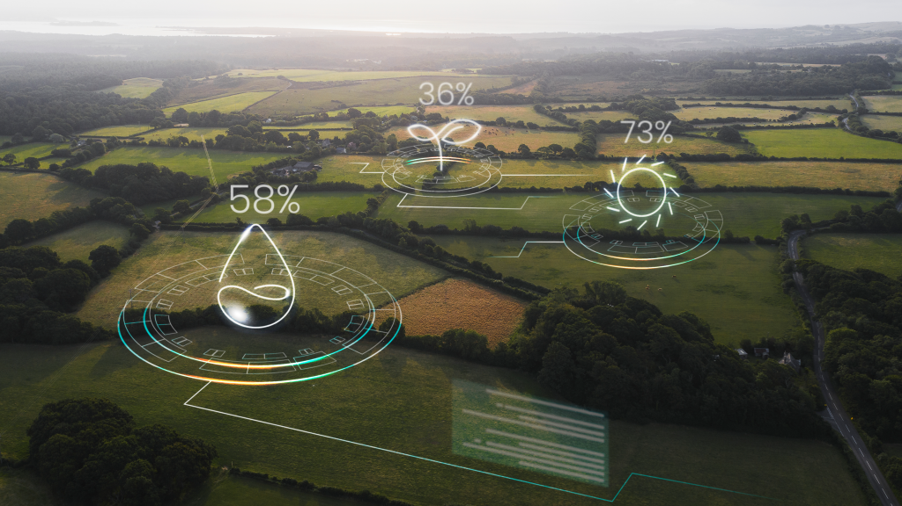
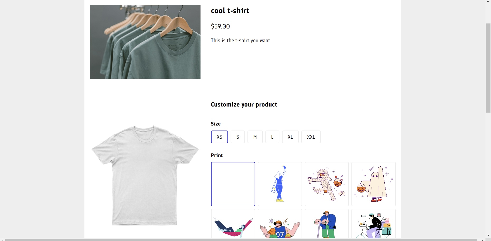
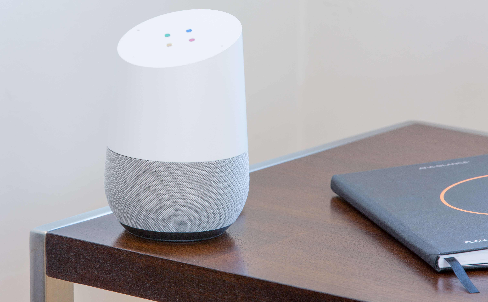

Underlay, AI for design sketching
Jun 2023 - Jul 2023
Starting a digital sketch can be challenging, particularly when trying to establish the correct perspective, proportions, and lighting. Underlay simplifies this process by generating geometry based on your design requirements...
View ProjectSkills: Artificial Intelligence (AI) · Google Cloud Platform (GCP) · Three.js · CSS · HTML · JavaScript · Java
Revolve, a sketch into a cylindrical form generator
Jun 2023 - Jun 2023
Introducing Revolve, a tool that translates a sketch into a cylindrical form. Revolve makes it easy to quickly explore 3D forms while seeing changes in real time...
View ProjectSkills: Three.js · CSS · HTML · JavaScript · Java
Sample, color palette generator
May 2023 - Jun 2023
Introducing Sample, a color palette generator. When making color and material decisions, it can be a challenge. Sample simplifies this process by calculating the primary colors that exist within an image...
View ProjectSkills: Figma (Software) · CSS · HTML · JavaScript · Java

An IoT-Model for Monitoring Irrigated Crops
Sep 19, 2022
Many cropping systems are concerned about effectively managing water. This publication explores the enhancement of water management of irrigated crops using IoT and Wireless Sensor Networks...
Skills: IoT · Wireless Sensor Networks · Water Management

Customizable E-store Web Application
Aug 2022 - Oct 2022
Developed a custom responsive ‘E-commerce’ web application using Angular. The application employs Typescript as the primary language and showcases dynamic, multi-browser compatible pages...
View ProjectSkills: Angular.js · CSS · HTML · JavaScript · Spring Framework
Workshop Paper Submission and Review System
Aug 2022 - Dec 2022
Created a web-based system (SAM2023) for an international conference on software engineering to submit and review papers. The system provides various functionalities including paper submission, review, user management, and more...
View Project
Real-time Stock Market Data Analysis System
Mar 2022 - Jul 2022
Experience in developing real-time data processing and analysis systems using various technologies. The system is adept in big data storage and processing, front-end data visualization, and cloud deployment...
Skills: Java 8 · Spring Boot · Gradle · Apache Kafka · Hadoop · Spark · ReactJS · D3.js · AWS EC2 · AWS S3

Home Automation including RFID Security door
Oct 2021 - Nov 2021
Built an Arduino-based user-control home automation system including an RFID security door. The system features mobile application controls, WIFI module integration, and secure RFID-based access...
Skills: Arduino · RFID · Mobile Application Development